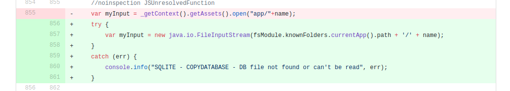

The AABill contains provisions to force companies and/or developers to add backdoors to any encryption system that the government desires. In addition, the government can use this backdoor at will. What stops the current party in power from not using it against say the other parties to try and dig up dirt? After all they want to remain in power... If the developer (or company) refuses to add the backdoor they can be fined and/or jailed. In addition their is provisions to squash all free speech so that the developer (or company) can be charged with a crime for reporting having to add a back door to the companies product. (i.e. they are legally gagged)
Lets say the government (with NO over sight needed!) decides it wants access to say WhatsApp encrypted messages. They can find ANY developer located in Australia that is on the Whatsapp team and give them a order of compliance. This developer then MUST create the code, attempt to get the backdoor code into the project without notifing ANYONE at the company. Now anyone in software development can understand how impossible this would be, but lets see if we can boil this done to help everyone understand why this is impossible.
Preface Development Processes & tools
Ok, lets explain a couple tools, processes and other things that occur on development projects:
- Source Control
- Source control shows a record of every single change done by each developer.
- Source control shows exactly every line changed in a simple format. (see example below)
- Source control changes is typically reviewed by other developers
- Bug dissection will give me a list of all changes between v1.01 and 1.05
- Project Tracking
- In a lot of companies all source changes is tied to a issue or bug report.
- No issue/bug report, no code changes are allowed.
- Management reviews issues
- Code review
- In many projects all code changes are reviewed by another developer
- Code may need to be signed off on before inclusion in the next version. (i.e. reviewed, and then the person reviewing it has to digitally sign the patch accepting it)
- High value code, might be reviewed by multiple senior developers (encryption is high value)
- Random code reviews, some companies do random code reviews to try and improve code quality
- Competency / Skill
- Not all developers are skilled in all areas of development. (Like asking a person that can repair vehicles, to fix a jet engine, eventually they can probably figure it out.)
- Some areas of development take a lot of skill, encryption is one of them.
- Adding hidden code that is not easily detected requires a lot of skill
- Peer Programming
- Some companies do peer programming. Peer programming is when one programmer actually programs and a SECOND programmer watches all the changes live, most the time they switch roles after a while. So at least two people are aware of all changes done to the system at all times; and this helps eliminate bugs...
Code Review Example
For those who don't understand how easily it is to see code changes here is a sample of a code change in one of my projects.

The red highlighted line was code that was removed; the green was code that was added. The white lines were unmodified. So even if the project has millions of lines of code; the code review only shows the small snippits of the actual code that changed. So it is very trivial to see what was changed and to review it.
The impact on the IT worker in Australia
Now, lets say Jim gets this request from the government to backdoor Whatsapp. Jim now needs to figure out how to subvert the systems in place to get the patches. So attempts to comply by first creating a fake issue, so that the source code changes might be accepted; lets say the issue says "App randomly crashes on message screen doing x,y,z". Priority high.
So now he has a ticket, but the ticket hasn't been assigned to him, if he is lucky he can self assign, if he is not lucky; he will have to see if he can convince a manager to assign the ticket giving a excuse that he is already in that part of the code and hopefully get his manager to assign the ticket to him.
Now lets say he is successful in getting the ticket assigned to himself; he now has a reason to commit new code. So if he is not familure with the encryption code in the project, he may have to spend a lot of time understanding the code. He now has a grasp of how the code works, now he needs to figure out how to backdoor the code without causing it to be obvious and without causing it to be exploitable by bad actors on the internet.
Ok, so he is a genius and manages to figure out how to do the almost impossible task of creating back door code that is not easily discovered as back door code. So now he commits the code to the repo.
IF the company does code reviews or signing, he is screwed it will most likely be detected. Lets pretend the company doesn't, so we can proceed.
The manager signs off on the issue; the issue is closed and so the code is accepted and shipped in the next version. WooHoo; he has successfully subverted the app.
Now you might think the story stops here; but it doesn't. Lets say three months later a new feature is needed in the app; which is very typical of all successful apps. The next developer who works on that code discovers some code that they see is doing something wrong. The developer looks into the commit log and sees that Jim worked committed the code. She reports it to the boss. Jim is fired for adding back doors to the application. Jim can't defend himself because he has a gag order preventing him from discussing anything relating to the backdoor they forced him to add. Jim is now blackballed in the industry...
In all reality this story has so many places that it can fail:
- Ticket creation; management assigned the bug to a different developer? What does Jim do?
- Skill to actually do the job. Encryption is very a hard problem, even seasoned experts make mistakes.
- A bug occurs in the new "backdoor" code, this is actually likely since subverting encryption is very difficult. Who gets assigned to fix it?
- Code review; how does Jim get the changes past other developers?
- Feature requests in the same area of code (unrelated to backdoor). The odds of eventually discovery...
- A new bug occurs in v1.05 that is known to have worked in v1.00. A developer can ask the source control for all changes between v1.00 and v1.05 and of course in v1.03 the backdoor was added and is now detected...
The biggest issue is that literally everything has to go perfect for Jim to come out even! If any
one thing goes wrong now and in the future; he would lose everything.
In all of those cases; in which he fails; he now has a electronic paper trail pointing back to HIM that he is the guilty party that added the code.
I can't think of any company that would appreciate the deliberate backdooring of their security; and as such the Australian government just cost Jim his job and a highly likely his career permanently.
Are you exaggerating how this impact a worker?
Now, I have read that the expectation is that the government will ask the company, and then the company will comply under penalty of fine. That specific situation makes Jim not have to worry about his job. (Yay!) However, the legalise does NOT stipulate this as a requirement, they have the legal right to
force anyone, and then that person is gagged. So lets say they approach Facebook to add this encryption, Facebook says; we will eat the fine and go jump off a cliff government agent. Do you really think the government is going to stop at that point? Why would they, they are fully
entitled to require everyone at the company to make these changes... Who is next on the list to get this done? It is going to approach a developer or manager since they LEGALLY can? You got it; never has the government not abused a power granted to them, and this one makes it legal to require anyone to comply and be gagged about the requirement.